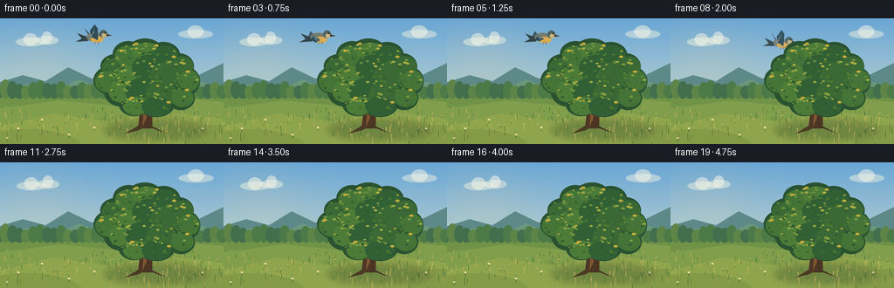
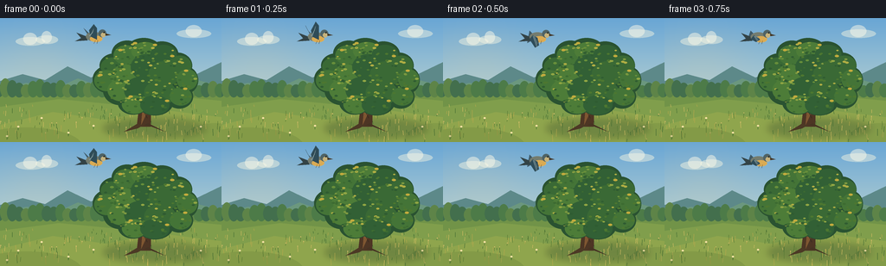
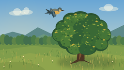
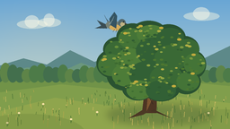
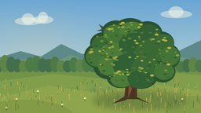
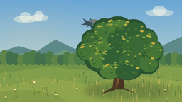

CODING AGENTS AS PIXEL WORLD MODELS
traex/GPT-5.6-Sol · dynamic_spatial_relationship_0047
点击播放 · 原生 RGB 像素
逐轮保存的候选
回放视频、检查图与代码变化。
每份候选均可单独播放。实际图片检查记录在下方工具轨迹中。
候选 01播放与检查图
点击播放 · 原生 RGB 像素


展开代码变化
--- 上一保存版本
+++ 本次保存版本
@@ -0,0 +1,248 @@
+from pathlib import Path
+import math
+import random
+
+import numpy as np
+from PIL import Image, ImageDraw, ImageFilter
+
+import artifact_io
+
+
+W, H, N = 256, 144, 20
+SS = 4
+
+
+def sc(v):
+ return int(round(v * SS))
+
+
+def box(coords):
+ return tuple(sc(v) for v in coords)
+
+
+def pts(points):
+ return [(sc(x), sc(y)) for x, y in points]
+
+
+def sky_and_land(frame_index):
+ """Softly painted fixed-camera autumn meadow."""
+ h, w = H * SS, W * SS
+ yy = np.linspace(0, 1, h)[:, None, None]
+ top = np.array([105, 166, 213], dtype=float)[None, None, :]
+ horizon = np.array([224, 231, 207], dtype=float)[None, None, :]
+ arr = top * (1 - yy) + horizon * yy
+ arr = np.repeat(arr, w, axis=1)
+
+ # A warm patch in the sky gives the scene depth without competing with the bird.
+ Y, X = np.mgrid[0:h, 0:w]
+ glow = np.exp(-(((X / SS - 44) / 57) ** 2 + ((Y / SS - 52) / 44) ** 2))[:, :, None]
+ arr = arr * (1 - .12 * glow) + np.array([255, 218, 150])[None, None, :] * (.12 * glow)
+ img = Image.fromarray(np.uint8(np.clip(arr, 0, 255)), "RGB")
+ d = ImageDraw.Draw(img, "RGBA")
+
+ # Distant clouds, drifting only a fraction of a pixel over the shot.
+ drift = frame_index * 0.08
+ for cx, cy, rx in [(35 + drift, 27, 17), (54 + drift, 25, 13), (224 + drift * .55, 18, 20)]:
+ d.ellipse(box((cx-rx, cy-5, cx+rx, cy+5)), fill=(248, 247, 226, 115))
+ d.ellipse(box((cx-rx*.48, cy-10, cx+rx*.45, cy+4)), fill=(252, 249, 232, 125))
+
+ # Layered blue hills.
+ d.polygon(pts([(0,91),(0,73),(26,65),(52,72),(78,56),(105,69),(134,57),(164,70),(194,58),(225,66),(256,51),(256,98)]),
+ fill=(93,137,137,255))
+ d.polygon(pts([(0,99),(0,82),(31,75),(61,83),(90,70),(121,81),(150,69),(184,82),(217,69),(256,79),(256,104)]),
+ fill=(107,151,126,255))
+
+ # Meadow base and bands of light.
+ d.rectangle(box((0,89,256,144)), fill=(113,147,72,255))
+ d.polygon(pts([(0,103),(68,94),(130,100),(204,91),(256,96),(256,144),(0,144)]), fill=(128,158,76,255))
+ d.polygon(pts([(0,124),(61,109),(122,118),(184,106),(256,115),(256,144),(0,144)]), fill=(151,169,77,170))
+
+ # Tree's broad soft shadow on grass.
+ shadow = Image.new("RGBA", img.size, (0,0,0,0))
+ sd = ImageDraw.Draw(shadow, "RGBA")
+ sd.ellipse(box((119,117,238,139)), fill=(40,65,41,78))
+ shadow = shadow.filter(ImageFilter.GaussianBlur(sc(4)))
+ img = Image.alpha_composite(img.convert("RGBA"), shadow).convert("RGB")
+ return img
+
+
+def draw_background_details(img, frame_index):
+ d = ImageDraw.Draw(img, "RGBA")
+ rng = random.Random(811)
+ # Distant tree line.
+ for x in range(-3, 260, 8):
+ ht = rng.randint(5, 13)
+ col = rng.choice([(67,111,77,210),(77,123,72,215),(94,132,72,205)])
+ d.ellipse(box((x-5, 83-ht, x+7, 92)), fill=col)
+ # Grass blades and seed heads, deterministic but gently animated.
+ for i in range(185):
+ x = rng.uniform(0,256)
+ y = rng.uniform(102,145)
+ length = rng.uniform(2.0,7.5) * (0.7 + (y-102)/60)
+ sway = math.sin(frame_index*.22 + i*1.73) * .45
+ color = rng.choice([(62,105,49,125),(88,121,52,150),(183,168,76,135),(216,190,99,115)])
+ d.line(pts([(x,y),(x+sway,y-length)]), fill=color, width=max(1,sc(.38)))
+ if i % 13 == 0:
+ d.ellipse(box((x+sway-.45,y-length-.5,x+sway+.45,y-length+.6)), fill=(211,188,106,140))
+ # A few tiny foreground flowers.
+ for x,y in [(21,126),(48,116),(79,133),(232,126),(8,137),(108,125)]:
+ d.line(pts([(x,y+4),(x,y)]), fill=(54,104,47,190), width=sc(.45))
+ d.ellipse(box((x-1.2,y-1.0,x+1.2,y+1.0)), fill=(247,226,164,210))
+
+
+def draw_tree(img, frame_index):
+ """Detailed foreground tree; this layer is the occluder the bird flies behind."""
+ d = ImageDraw.Draw(img, "RGBA")
+ sway = math.sin(frame_index * .20) * .35
+
+ # Trunk silhouette and large branches.
+ d.polygon(pts([(158,126),(162,91),(164,67),(169,49),(174,49),(172,76),(180,56),(184,57),
+ (175,86),(174,126)]), fill=(77,53,36,255))
+ d.polygon(pts([(165,83),(149,65),(134,57),(136,53),(154,62),(168,73)]), fill=(82,57,37,255))
+ d.polygon(pts([(170,75),(189,57),(207,50),(208,54),(191,62),(174,85)]), fill=(72,50,35,255))
+ d.polygon(pts([(168,62),(160,47),(161,38),(165,38),(166,48),(173,63)]), fill=(87,60,39,255))
+ # Bark highlight and cracks.
+ d.polygon(pts([(163,124),(166,88),(168,66),(170,52),(173,51),(170,77),(169,111)]), fill=(126,86,49,190))
+ d.line(pts([(162,104),(168,96),(164,87)]), fill=(48,39,31,150), width=sc(.75))
+ d.line(pts([(170,116),(166,108)]), fill=(48,39,31,145), width=sc(.65))
+ d.line(pts([(170,72),(181,60)]), fill=(139,93,50,135), width=sc(.75))
+
+ # Canopy made from layered clusters: dark rear mass, mid greens, and sunlit tops.
+ clusters = [
+ (132,55,17,14),(147,41,18,15),(166,37,20,14),(187,42,19,15),(205,55,17,15),
+ (125,71,18,16),(145,65,22,18),(169,58,23,20),(193,65,23,19),(214,72,15,16),
+ (139,84,20,17),(162,82,24,20),(187,84,23,19),(207,91,16,14),(154,98,18,14),(179,98,21,15)
+ ]
+ # rear crown
+ for j,(x,y,rx,ry) in enumerate(clusters):
+ xx = x + sway * (0.35 + (105-y)/75) * (1 if j%2 else -1)
+ d.ellipse(box((xx-rx,y-ry,xx+rx,y+ry)), fill=(42,82,49,255))
+ # mid clusters, slightly inset, create a painterly but legible silhouette.
+ rng = random.Random(991)
+ mids = []
+ for j,(x,y,rx,ry) in enumerate(clusters):
+ xx = x + sway * (0.45 + (105-y)/80)
+ ox, oy = rng.uniform(-3,3), rng.uniform(-2,3)
+ col = [(58,105,53,245),(68,116,55,245),(77,124,56,240),(50,96,53,245)][j%4]
+ d.ellipse(box((xx-rx*.80+ox,y-ry*.76+oy,xx+rx*.80+ox,y+ry*.76+oy)), fill=col)
+ mids.append((xx,y,rx,ry))
+ # Individual leaf dabs following the cluster outline.
+ rng = random.Random(2481)
+ for i in range(205):
+ x,y,rx,ry = rng.choice(mids)
+ a = rng.random()*math.tau
+ r = math.sqrt(rng.random())*.82
+ px = x + math.cos(a)*rx*r
+ py = y + math.sin(a)*ry*r
+ if py < y-1:
+ col = rng.choice([(126,154,65,205),(145,166,68,200),(104,143,59,220),(177,174,68,180)])
+ else:
+ col = rng.choice([(47,91,49,200),(61,107,49,210),(77,119,48,195)])
+ rr = rng.uniform(1.05,2.15)
+ d.ellipse(box((px-rr,py-rr*.55,px+rr,py+rr*.55)), fill=col)
+ # A few warm leaves to make the tree visually distinctive.
+ for x,y in [(139,37),(156,29),(179,31),(199,44),(116,66),(215,61),(193,96),(151,91),(214,82)]:
+ d.ellipse(box((x-2.4+sway,y-1.3,x+2.4+sway,y+1.3)), fill=(195,171,62,225))
+ # Roots anchor the tree in front of the meadow.
+ d.polygon(pts([(158,123),(143,132),(159,128),(166,124)]), fill=(76,57,37,210))
+ d.polygon(pts([(171,122),(191,132),(175,126),(167,124)]), fill=(70,52,35,210))
+
+
+def make_bird(scale_factor, wing_phase):
+ """Side-on flying songbird sprite with an unmistakable beak, eye, wings and tail."""
+ sw, sh = sc(54), sc(48)
+ sprite = Image.new("RGBA", (sw,sh), (0,0,0,0))
+ d = ImageDraw.Draw(sprite, "RGBA")
+ cx, cy = 25, 25
+ flap = math.sin(wing_phase)
+ tip_y = cy - 5 - 14 * flap
+
+ def B(c): return tuple(sc(v) for v in c)
+ def P(p): return [(sc(x),sc(y)) for x,y in p]
+ # Far wing and forked tail.
+ d.polygon(P([(cx-4,cy),(cx-11,cy-7),(cx-14,tip_y+2),(cx-5,cy+4)]), fill=(55,77,87,220))
+ d.polygon(P([(cx-10,cy+1),(cx-23,cy-4),(cx-17,cy+3),(cx-25,cy+7),(cx-9,cy+6)]), fill=(51,67,70,255))
+ # Body, breast and head.
+ d.ellipse(B((cx-11,cy-5,cx+9,cy+7)), fill=(116,124,111,255))
+ d.ellipse(B((cx-6,cy,cx+10,cy+8)), fill=(218,171,83,255))
+ d.ellipse(B((cx+5,cy-8,cx+15,cy+2)), fill=(79,99,101,255))
+ d.ellipse(B((cx+8,cy-4,cx+14,cy+2)), fill=(197,178,125,255))
+ # Near wing changes shape dramatically over the flap cycle.
+ if flap >= 0:
+ wing = [(cx-5,cy+1),(cx-7,cy-7),(cx-1,tip_y-3),(cx+3,tip_y+2),(cx+3,cy+5)]
+ else:
+ wing = [(cx-7,cy-1),(cx-1,cy+2),(cx+1,tip_y+5),(cx-4,tip_y+8),(cx-11,cy+4)]
+ d.polygon(P(wing), fill=(47,76,88,255))
+ # Pale feather strokes on wing.
+ for off in [0,2.2,4.2]:
+ d.line(P([(cx-5-off*.4,cy),(cx-1-off*.25,tip_y+3+off)]), fill=(141,151,137,180), width=max(1,sc(.55)))
+ # Beak and eye.
+ d.polygon(P([(cx+14,cy-3),(cx+21,cy-1),(cx+14,cy)]), fill=(65,51,34,255))
+ d.ellipse(B((cx+11.0,cy-5.2,cx+12.7,cy-3.5)), fill=(14,18,17,255))
+ d.ellipse(B((cx+11.3,cy-5.0,cx+11.8,cy-4.5)), fill=(255,245,206,245))
+ # Feet trail subtly.
+ d.line(P([(cx+1,cy+6),(cx-1,cy+10)]), fill=(70,51,35,210), width=max(1,sc(.5)))
+ d.line(P([(cx+4,cy+6),(cx+3,cy+10)]), fill=(70,51,35,210), width=max(1,sc(.5)))
+
+ if abs(scale_factor-1) > .001:
+ sprite = sprite.resize((max(1,int(sw*scale_factor)),max(1,int(sh*scale_factor))), Image.Resampling.LANCZOS)
+ return sprite
+
+
+def bird_state(f):
+ # Establish the first relation for over a second, then take a smooth diving arc into the crown.
+ if f <= 4:
+ x = 111 + 0.7*math.sin(f*.9)
+ y = 19.5 + 0.5*math.sin(f*.7)
+ p = 0.0
+ else:
+ u = (f-4)/12.0
+ u = min(1.0, max(0.0,u))
+ p = u*u*(3-2*u)
+ x = 111 + 68*p
+ y = 19.5 + 47*p - 7*math.sin(math.pi*p)
+ scale_factor = .91 - .25*p # receding into depth behind the tree
+ return x,y,p,scale_factor
+
+
+def paste_bird(img, f, opacity=1.0):
+ x,y,p,s = bird_state(f)
+ sprite = make_bird(s, f*1.82 + .5)
+ # Nose dips slightly along the curved flight path.
+ angle = -min(17, p*17)
+ sprite = sprite.rotate(angle, resample=Image.Resampling.BICUBIC, expand=True)
+ if opacity < 1:
+ alpha = sprite.getchannel("A").point(lambda a: int(a*opacity))
+ sprite.putalpha(alpha)
+ img.alpha_composite(sprite, (int(sc(x)-sprite.width/2), int(sc(y)-sprite.height/2)))
+
+
+def render_frame(f):
+ img = sky_and_land(f).convert("RGBA")
+ draw_background_details(img, f)
+ _,_,p,_ = bird_state(f)
+
+ # Once it reaches the crown's outer edge, place it BEFORE the tree. The foliage then
+ # naturally masks more and more of it, making "flies to the back" visually explicit.
+ if p >= .23:
+ paste_bird(img, f, opacity=.92)
+ draw_tree(img, f)
+ if p < .23:
+ paste_bird(img, f)
+
+ # Warm foreground vignette / depth cue.
+ overlay = Image.new("RGBA", img.size, (0,0,0,0))
+ od = ImageDraw.Draw(overlay, "RGBA")
+ od.ellipse(box((-35,127,95,171)), fill=(63,92,39,38))
+ od.ellipse(box((211,122,286,163)), fill=(48,82,40,32))
+ img = Image.alpha_composite(img, overlay)
+ return np.asarray(img.convert("RGB").resize((W,H), Image.Resampling.LANCZOS), dtype=np.uint8)
+
+
+def main():
+ frames = np.stack([render_frame(i) for i in range(N)], axis=0)
+ artifact_io.save(frames, Path(__file__).resolve().parent)
+
+
+if __name__ == "__main__":
+ main()
可观测工具轨迹
实际执行的命令与返回图片。
命令 1exit 0
/bin/bash -lc "cat prompt.txt && printf '\\n---RULES---\\n' && cat GENERATION_RULES.md && printf '\\n---SPEC---\\n' && cat task_spec.json"
命令 2exit 0
/bin/bash -lc "find . -maxdepth 2 -type f -printf '%p %s bytes\\n' | sort | head -200"
命令 3exit 0
/bin/bash -lc "sed -n '1,240p' artifact_io.py"
命令 4exit 0
/bin/bash -lc 'python generate.py'
命令 5exit 0
/bin/bash -lc "python - <<'PY'
import numpy as np
from PIL import Image
z=np.load('pixels.npz')['pixels']
print(z.shape,z.dtype,hex(int(z.min())),hex(int(z.max())))
for i in range(1,20):
a=np.array(Image.open(f'frames/{i-1:02d}.png')).astype(int)
b=np.array(Image.open(f'frames/{i:02d}.png')).astype(int)
print(i, round(np.abs(b-a).mean(),2), np.mean(np.any(a"'!=b,2)).round(3))
PY'命令 6exit 0
/bin/bash -lc "ls -lh generate.py pixels.npz inspection.png transition_check.png index.html frames/*.png | tail -25 && python - <<'PY'
from PIL import Image
import numpy as np
fs=np.stack([np.asarray(Image.open(f'frames/{i:02}.png')) for i in range(20)])
assert fs.shape==(20,144,256,3) and fs.dtype==np.uint8
print('validated',fs.shape,fs.dtype,'frames unique',len({x.tobytes() for x in fs}))
PY"视觉工具实际返回图片 1

视觉工具实际返回图片 2

视觉工具实际返回图片 3

视觉工具实际返回图片 4

视觉工具实际返回图片 5

保存候选 1 份；完成命令 6 次；可验证图片返回 5 张。原始 API 响应与完整日志保留在本地。